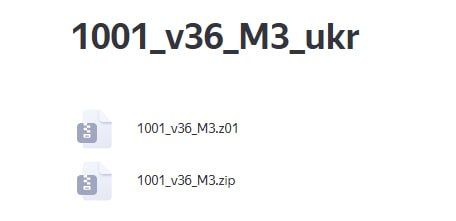

Прошивка дронов DJI Mavic 3 на 1001ую прошивку (v34/v36) с помощью программы "1001_v36_M3*".
БЕЗ ИСПОЛЬЗОВАНИЯ ТЕРМИНАЛА.
* Так как эта программа, по сути, копия прошивки 1001й (версии 36), то мы условно всегда будем называть её «1001_v36_M3».
Непроверенная внешняя ссылка
Скачать программное обеспечение "1001_v36_M3"
Скачать программное обеспечение "1001_v36_M3"
- скачать все файлы в одну папку,
- файл с расширением .zip распаковать с помощью любого архиватора (например 7zip или WinRar).
- продолжить работу с папкой "1001_v36_M3", по
Только для DJI Mavic 3
при поддержке
Это вложение из поста t.me/platforma_fpv/35/1688
Подробный мануал, как подготовить компьютер и прошить Mavic 3 на 1001 при отсутствии терминала.
📝
#инструкции
#техник_бпла
Это вложение из поста t.me/platforma_fpv/107/1687
Подробный мануал, как подготовить компьютер и прошить Mavic 3 на 1001 при отсутствии терминала.
📝
#инструкции
#техник_бпла
Это вложение из поста t.me/platforma_fpv/107/1687
Инструкция оператору Mavic 3
с 1001й (v34/v36) от Русских Хакеров.
⚠️ По умолчанию мы рекомендуем устанавливать
36ую версию
, т.к. в ней добавлена Команда
"lost"
#инструкции
#техник_бпла
Это вложение из поста t.me/platforma_fpv/107/1683

Прошивка дронов DJI Mavic 3 на 1001ую прошивку (v34/v36) с помощью программы "1001_v36_M3*".
БЕЗ ИСПОЛЬЗОВАНИЯ ТЕРМИНАЛА.
* Так как эта трофейная программа, по сути, копия прошивки 1001й (версии 36), то мы условно всегда будем называть её «1001_v36_M3».
Только для DJI Mavic 3
- скачать все файлы в одну папку;
- файл с расширением .zip распаковать с помощью любого архиватора (например 7zip или WinRar);
- продолжить работу с папкой "1001_v36_M3", по
.
⚠️ Перед прошивкой на компьютер заранее необходимо установить дополнительные программы и драйвера.
Установку программ и драйверов необходимо осуществлять под учетной записью
Администратора компьютера
✔️ По умолчанию мы рекомендуем устанавливать
36-ую версию
, т.к. в ней добавлена Команда
"lost"
.
📝 Посмотреть все альтернативы 1001й, если терминал с 1001й недоступен (
добавим в ближайшее время
при поддержке
#ПРОШИВКА
#DJI
#техник_бла
Веб-страница создана автоматически на основе поста пользователя ПЛАТФОРМА_FPV